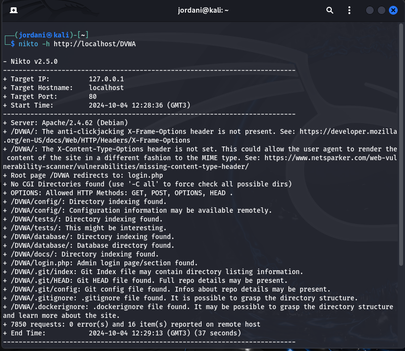
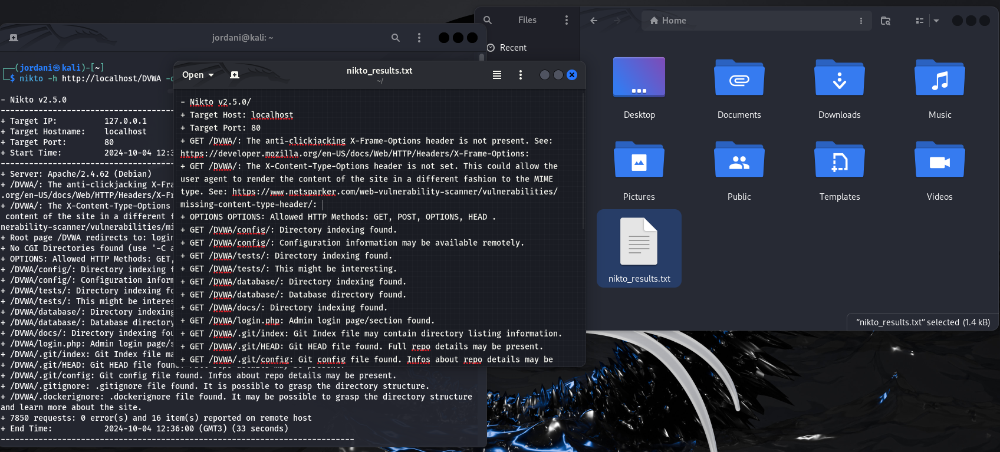

Презентация по лабораторной работе №5
Информационная безопасность
Российский университет дружбы народов, Москва, Россия
03 Октября 2024
Часть 1: Изучение SetUID- и SetGID-битов
Вход в систему.

Создание
программы simpleid.c и её компиляция:


Запуск
программы simpleid и сравнение результата с системной
командой id:


Усложнение программы, создание simpleid2.c:


Изменение
владельца программы simpleid2 на root и
установка SetUID-бита:


- Это позволит программе выполняться с правами пользователя root, независимо от того, кто её запускает.
Запуск
simpleid2 и id для сравнения результатов:

Потом запустил программу и убедился, что эффективный UID соответствует root, даже если программа запускается обычным пользователем, что подтверждает работу SetUID.

Применение SetGID-бита к
simpleid2:

- Программа будет выполняться с правами группы guest. Сравниk
результаты
./simpleid2 и id, чтобы увидел, что GID соответствует группе владельца, указанной в SetGID.
Создание
программы readfile.c для чтения файла:


Изменение владельца файла и прав доступа:

Проверил, что пользователь guest не может прочитать файл readfile.c (должна быть ошибка “Permission denied”)

Установка
SetUID-бита на программу readfile:

- Теперь программа будет выполняться с правами root.
Проверка,
может ли программа readfile прочитать файл
readfile.c:

- Программа должна успешно прочитать файл благодаря SetUID-биту.
Проверка,
может ли программа readfile прочитать
файл /etc/shadow:

Часть 2: Исследование Sticky-бита
Проверка наличия
Sticky-бита на директории /tmp:

- Sticky-бит
(t)указывает, что только владелец файла или root может удалить его, даже если у других пользователей есть права на запись.
Создание файла в
/tmp и изменение прав доступа:**


Чтение и изменение файла другим пользователем guest2:

Чтение и запись должны быть успешными, но удаление файла будет невозможно благодаря Sticky-биту


Удаление Sticky-бита с
/tmp:

От
пользователя guest2 проверил, что атрибута t у директории
/tmp нет:

- Повторил попытку удаления файла от пользователя guest2. Теперь файл должен быть удалён, так как Sticky-бит больше не защищает его, но что-то не так.
Возвращение Sticky-бита на
/tmp:

Теперь повторил действия и убедился, что удаление файла снова запрещено для пользователей, не являющихся его владельцем.